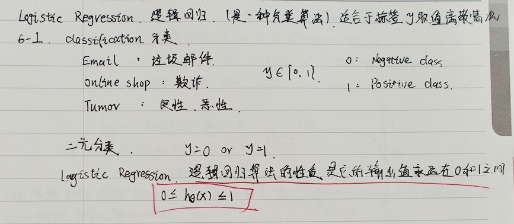
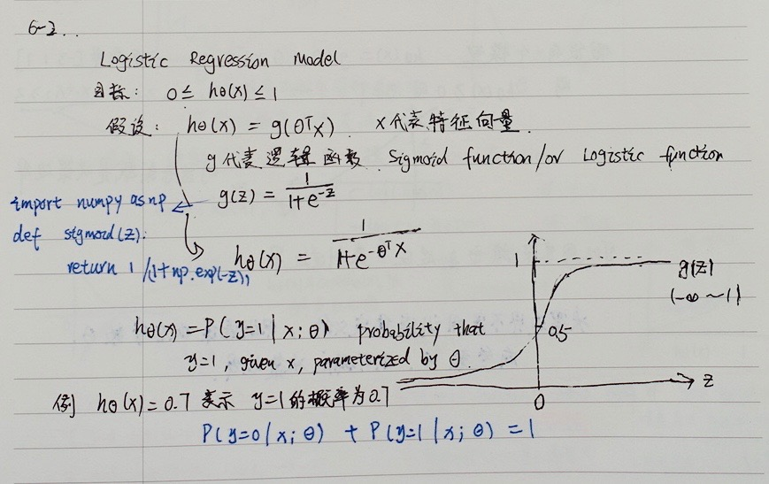
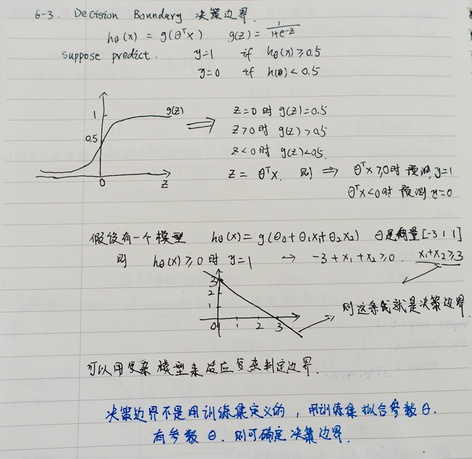
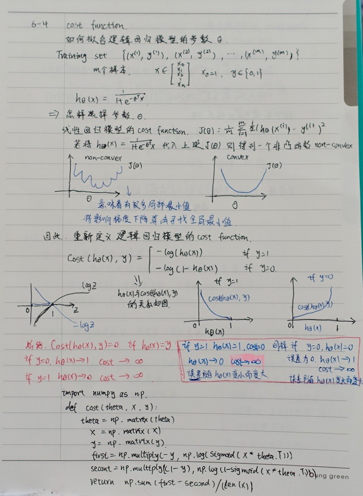
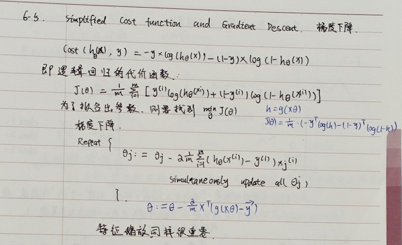
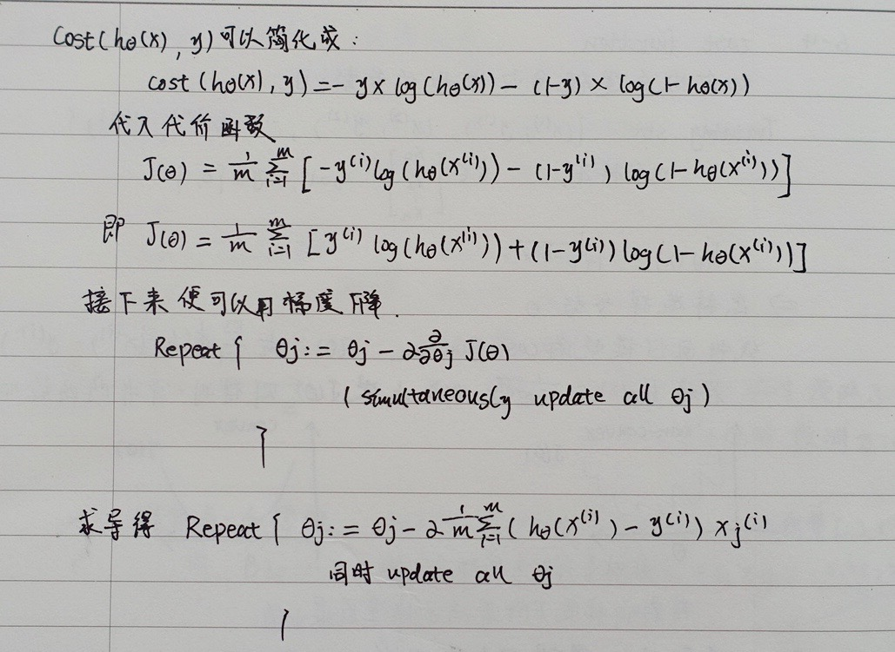
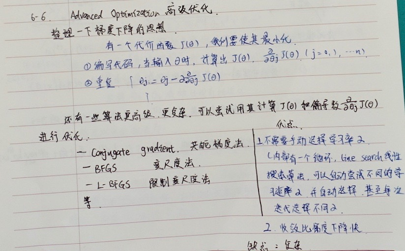
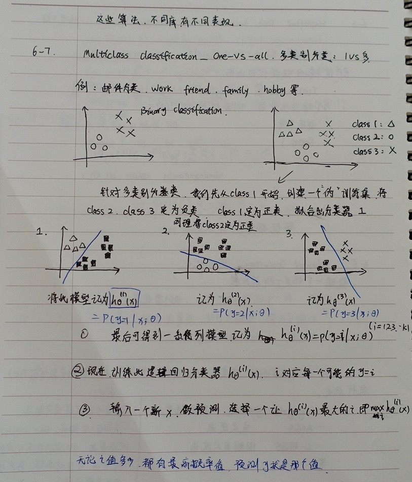

分类问题 Classification
在分类问题中，你要预测的变量 $y$ 是离散的值，我们将学习一种叫做逻辑回归 (Logistic Regression) 的算法，这是目前最流行使用最广泛的一种学习算法。
在分类问题中，我们尝试预测的是结果是否属于某一个类（例如正确或错误）。分类问题的例子有：判断一封电子邮件是否是垃圾邮件；判断一次金融交易是否是欺诈；之前我们也谈到了肿瘤分类问题的例子，区别一个肿瘤是恶性的还是良性的。

我们从二元的分类问题开始讨论。
我们将因变量(dependent variable)可能属于的两个类分别称为负向类（negative class）和正向类（positive class），则因变量$y\in { 0,1 \}$ ，其中 0 表示负向类，1 表示正向类。
如果我们要用线性回归算法来解决一个分类问题，对于分类， $y$ 取值为 0 或者1，但如果你使用的是线性回归，那么假设函数的输出值可能远大于 1，或者远小于0，即使所有训练样本的标签 $y$ 都等于 0 或 1。尽管我们知道标签应该取值0 或者1，但是如果算法得到的值远大于1或者远小于0的话，就会感觉很奇怪。所以我们在接下来的要研究的算法就叫做逻辑回归算法，这个算法的性质是：它的输出值永远在0到 1 之间。
顺便说一下，逻辑回归算法是分类算法，我们将它作为分类算法使用。有时候可能因为这个算法的名字中出现了“回归”使你感到困惑，但逻辑回归算法实际上是一种分类算法，它适用于标签 $y$ 取值离散的情况，如：1 0 0 1。
假说表示 Hypothesis Representation
我们希望想出一个满足某个性质的假设函数，这个性质是它的预测值要在0和1之间。
根据线性回归模型我们只能预测连续的值，然而对于分类问题，我们需要输出0或1，我们可以预测：
当${h_\theta}\left( x \right)>=0.5$时，预测 $y=1$。
当${h_\theta}\left( x \right)<0.5$时，预测 $y=0$ 。
我们引入一个新的模型，逻辑回归，该模型的输出变量范围始终在0和1之间。
逻辑回归模型的假设是： $h_\theta \left( x \right)=g\left(\theta^{T}X \right)$
其中：
$X$ 代表特征向量
$g$ 代表逻辑函数（logistic function)是一个常用的逻辑函数为S形函数（Sigmoid function）

python代码实现：
1 | python |
$h_\theta \left( x \right)$的作用是，对于给定的输入变量，根据选择的参数计算输出变量=1的可能性（estimated probablity）即$h_\theta \left( x \right)=P\left( y=1|x;\theta \right)$
例如，如果对于给定的$x$，通过已经确定的参数计算得出$h_\theta \left( x \right)=0.7$，则表示有70%的几率$y$为正向类，相应地$y$为负向类的几率为1-0.7=0.3。
判定边界 Decision Boundary
决策边界(decision boundary)的概念能更好地帮助我们理解逻辑回归的假设函数在计算什么。

在逻辑回归中，我们预测：
当${h_\theta}\left( x \right)>=0.5$时，预测 $y=1$。
当${h_\theta}\left( x \right)<0.5$时，预测 $y=0$ 。
根据上面绘制出的 S 形函数图像，我们知道当
$z=0$ 时 $g(z)=0.5$
$z>0$ 时 $g(z)>0.5$
$z<0$ 时 $g(z)<0.5$
又 $z={\theta^{T}}x$ ，即：
${\theta^{T}}x>=0$ 时，预测 $y=1$
${\theta^{T}}x<0$ 时，预测 $y=0$
我们可以用非常复杂的模型来适应非常复杂形状的判定边界。
代价函数 Cost Function
我们要介绍如何拟合逻辑回归模型的参数$\theta$。具体来说，我要定义用来拟合参数的优化目标或者叫代价函数，这便是监督学习问题中的逻辑回归模型的拟合问题。
对于线性回归模型，我们定义的代价函数是所有模型误差的平方和。理论上来说，我们也可以对逻辑回归模型沿用这个定义，但是问题在于，当我们将${h_\theta}\left( x \right)=\frac{1}{1+{e^{-\theta^{T}x}}}$带入到这样定义了的代价函数中时，我们得到的代价函数将是一个非凸函数（non-convexfunction）。
这意味着我们的代价函数有许多局部最小值，这将影响梯度下降算法寻找全局最小值。

Python代码实现：
1 | import numpy as np |
在得到这样一个代价函数以后，我们便可以用梯度下降算法来求得能使代价函数最小的参数了。算法为：
Repeat {
$\theta_j := \theta_j - \alpha \frac{\partial}{\partial\theta_j} J(\theta)$
(simultaneously update all )
}
求导后得到：
Repeat {
$\theta_j := \theta_j - \alpha \frac{1}{m}\sum\limits_{i=1}^{m}{ {\left( {h_\theta}\left( \mathop{x}^{\left( i \right)} \right)-\mathop{y}^{\left( i \right)} \right)}}\mathop{x}_{j}^{(i)}$
(simultaneously update all )
}
在这个视频中，我们定义了单训练样本的代价函数，凸性分析的内容是超出这门课的范围的，但是可以证明我们所选的代价值函数会给我们一个凸优化问题。代价函数$J(\theta)$会是一个凸函数，并且没有局部最优值。
推导过程：
$J\left( \theta \right)=-\frac{1}{m}\sum\limits_{i=1}^{m}{[{ {y}^{(i)}}\log \left( {h_\theta}\left( { {x}^{(i)}} \right) \right)+\left( 1-{ {y}^{(i)}} \right)\log \left( 1-{h_\theta}\left( { {x}^{(i)}} \right) \right)]}$
考虑：
${h_\theta}\left( { {x}^{(i)}} \right)=\frac{1}{1+{ {e}^{-{\theta^T}{ {x}^{(i)}}}}}$
则：
${ {y}^{(i)}}\log \left( {h_\theta}\left( { {x}^{(i)}} \right) \right)+\left( 1-{ {y}^{(i)}} \right)\log \left( 1-{h_\theta}\left( { {x}^{(i)}} \right) \right)$
$={ {y}^{(i)}}\log \left( \frac{1}{1+{ {e}^{-{\theta^T}{ {x}^{(i)}}}}} \right)+\left( 1-{ {y}^{(i)}} \right)\log \left( 1-\frac{1}{1+{ {e}^{-{\theta^T}{ {x}^{(i)}}}}} \right)$
$=-{ {y}^{(i)}}\log \left( 1+{ {e}^{-{\theta^T}{ {x}^{(i)}}}} \right)-\left( 1-{ {y}^{(i)}} \right)\log \left( 1+{ {e}^{ {\theta^T}{ {x}^{(i)}}}} \right)$
所以：
$\frac{\partial }{\partial {\theta_{j}}}J\left( \theta \right)=\frac{\partial }{\partial {\theta_{j}}}[-\frac{1}{m}\sum\limits_{i=1}^{m}{[-{ {y}^{(i)}}\log \left( 1+{ {e}^{-{\theta^{T}}{ {x}^{(i)}}}} \right)-\left( 1-{ {y}^{(i)}} \right)\log \left( 1+{ {e}^{ {\theta^{T}}{ {x}^{(i)}}}} \right)]}]$
$=-\frac{1}{m}\sum\limits_{i=1}^{m}{[-{ {y}^{(i)}}\frac{-x_{j}^{(i)}{ {e}^{-{\theta^{T}}{ {x}^{(i)}}}}}{1+{ {e}^{-{\theta^{T}}{ {x}^{(i)}}}}}-\left( 1-{ {y}^{(i)}} \right)\frac{x_j^{(i)}{ {e}^{ {\theta^T}{ {x}^{(i)}}}}}{1+{ {e}^{ {\theta^T}{ {x}^{(i)}}}}}}]$
$=-\frac{1}{m}\sum\limits_{i=1}^{m}{ {y}^{(i)}}\frac{x_j^{(i)}}{1+{ {e}^{ {\theta^T}{ {x}^{(i)}}}}}-\left( 1-{ {y}^{(i)}} \right)\frac{x_j^{(i)}{ {e}^{ {\theta^T}{ {x}^{(i)}}}}}{1+{ {e}^{ {\theta^T}{ {x}^{(i)}}}}}]$
$=-\frac{1}{m}\sum\limits_{i=1}^{m}{\frac{ { {y}^{(i)}}x_j^{(i)}-x_j^{(i)}{ {e}^{ {\theta^T}{ {x}^{(i)}}}}+{ {y}^{(i)}}x_j^{(i)}{ {e}^{ {\theta^T}{ {x}^{(i)}}}}}{1+{ {e}^{ {\theta^T}{ {x}^{(i)}}}}}}$
$=-\frac{1}{m}\sum\limits_{i=1}^{m}{\frac{ { {y}^{(i)}}\left( 1\text{+}{ {e}^{ {\theta^T}{ {x}^{(i)}}}} \right)-{ {e}^{ {\theta^T}{ {x}^{(i)}}}}}{1+{ {e}^{ {\theta^T}{ {x}^{(i)}}}}}x_j^{(i)}}$
$=-\frac{1}{m}\sum\limits_{i=1}^{m}{({ {y}^{(i)}}-\frac{ { {e}^{ {\theta^T}{ {x}^{(i)}}}}}{1+{ {e}^{ {\theta^T}{ {x}^{(i)}}}}})x_j^{(i)}}$
$=-\frac{1}{m}\sum\limits_{i=1}^{m}{({ {y}^{(i)}}-\frac{1}{1+{ {e}^{-{\theta^T}{ {x}^{(i)}}}}})x_j^{(i)}}$
$=-\frac{1}{m}\sum\limits_{i=1}^{m}{[{ {y}^{(i)}}-{h_\theta}\left( { {x}^{(i)}} \right)]x_j^{(i)}}$
$=\frac{1}{m}\sum\limits_{i=1}^{m}{[{h_\theta}\left( { {x}^{(i)}} \right)-{ {y}^{(i)}}]x_j^{(i)}}$
注：虽然得到的梯度下降算法表面上看上去与线性回归的梯度下降算法一样，但是这里的${h_\theta}\left( x \right)=g\left( {\theta^T}X \right)$与线性回归中不同，所以实际上是不一样的。另外，在运行梯度下降算法之前，进行特征缩放依旧是非常必要的。
一些梯度下降算法之外的选择：
除了梯度下降算法以外，还有一些常被用来令代价函数最小的算法，这些算法更加复杂和优越，而且通常不需要人工选择学习率，通常比梯度下降算法要更加快速。这些算法有：共轭梯度（Conjugate Gradient），局部优化法(Broyden fletcher goldfarb shann,BFGS)和有限内存局部优化法(LBFGS)。
简化的成本函数和梯度下降 Simplified Cost Function and Gradient Descent
我们将会找出一种稍微简单一点的方法来写代价函数，来替换我们现在用的方法。同时我们还要弄清楚如何运用梯度下降法，来拟合出逻辑回归的参数。


高级优化 Advanced Optimization
我们讨论了用梯度下降的方法最小化逻辑回归中代价函数$J\left( \theta \right)$。现在学习一些高级优化算法和一些高级的优化概念，利用这些方法，我们就能够使通过梯度下降，进行逻辑回归的速度大大提高，而这也将使算法更加适合解决大型的机器学习问题，比如，我们有数目庞大的特征量。
现在我们换个角度来看什么是梯度下降，我们有个代价函数$J\left( \theta \right)$，而我们想要使其最小化，那么我们需要做的是编写代码，当输入参数 $\theta$ 时，它们会计算出两样东西：$J\left( \theta \right)$ 以及$J$ 等于 0、1直到 $n$ 时的偏导数项。

多类别分类：一对多 Multiclass Classification_ One-vs-all
我们将谈到如何使用逻辑回归 (logistic regression)来解决多类别分类问题，具体来说，我想通过一个叫做”一对多” (one-vs-all) 的分类算法。

我们将多个类中的一个类标记为正向类（$y=1$），然后将其他所有类都标记为负向类，这个模型记作$h_\theta^{\left( 1 \right)}\left( x \right)$。接着，类似地第我们选择另一个类标记为正向类（$y=2$），再将其它类都标记为负向类，将这个模型记作 $h_\theta^{\left( 2 \right)}\left( x \right)$,依此类推。
最后我们得到一系列的模型简记为： $h_\theta^{\left( i \right)}\left( x \right)=p\left( y=i|x;\theta \right)$其中：$i=\left( 1,2,3….k \right)$
最后，在我们需要做预测时，我们将所有的分类机都运行一遍，然后对每一个输入变量，都选择最高可能性的输出变量。
总之，我们已经把要做的做完了，现在要做的就是训练这个逻辑回归分类器：$h_\theta^{\left( i \right)}\left( x \right)$， 其中 $i$ 对应每一个可能的 $y=i$，最后，为了做出预测，我们给出输入一个新的 $x$ 值，用这个做预测。我们要做的就是在我们三个分类器里面输入 $x$，然后我们选择一个让 $h_\theta^{\left( i \right)}\left( x \right)$ 最大的$ i$，即$\mathop{\max}\limits_i\,h_\theta^{\left( i \right)}\left( x \right)$。
选择出哪一个分类器是可信度最高效果最好的，那么就可认为得到一个正确的分类，无论$i$值是多少，我们都有最高的概率值，我们预测$y$就是那个值。